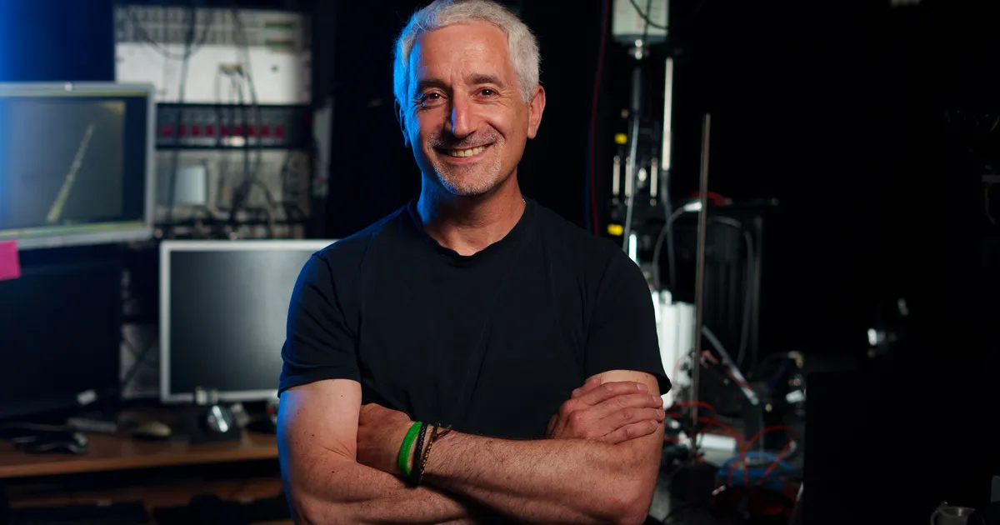

Faadil Mustun
PhD Candidate
Personal webpage ↗DOLPHIN TEAM · IBENS
We are a research team at the Institut de Biologie de l’École Normale Supérieure in Paris.
Our work combines animal behavior, bioacoustics and machine learning to study dolphin vocal communication over time.
THE LAB
We develop computational methods for analyzing large acoustic and behavioral datasets while keeping the biology at the center of the research.
PhD Candidate
Personal webpage ↗Research Engineer
Personal webpage ↗
Research Director · Team Lead
Lab webpage ↗F. Mustun, C. Semenzin, R. Dessì, P. Robin Guerrero, P. Orhan, A. Emanuelli, E. Rossi, Y. Lakretz, G. de Polavieja, G. Sumbre
NeurIPS 2026 · SpotlightC. Semenzin, F. Mustun, R. Dessì, P. Orhan, A. Emanuelli, Y. Lakretz, G. de Polavieja, G. Sumbre
PreprintF. Mustun, C. Semenzin, D. Rance, E. Marachlian, Z.-L. Guillerm, A. Mancini, I. Bouaziz, E. Fleck, N. Shashar, G. de Polavieja, G. Sumbre
bioRxivNeural Circuit dynamics & Behaviour · Institut de Biologie de l’École Normale Supérieure (IBENS)